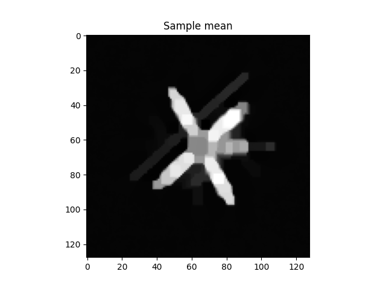
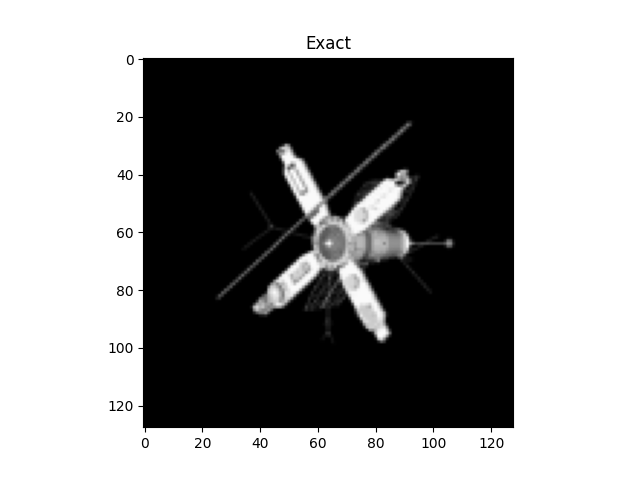
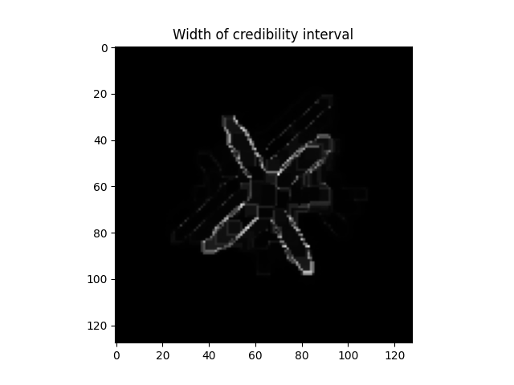

Note
Go to the end to download the full example code
2D Deconvolution#
In this example we show how to quantify the uncertainty of a solution to a 2D deconvolution problem.
First we import the modules needed.
import numpy as np
from cuqi.testproblem import Deconvolution2D
from cuqi.distribution import Gaussian, LMRF
from cuqi.problem import BayesianProblem
Step 1: Deterministic model#
Consider the deterministic inverse problem
where \(\mathbf{A}\) is a matrix representing a 2D convolution operation and \(\mathbf{y}\) and \(\mathbf{x}\) are the data and unknown (solution to the inverse problem) respectively.
A linear forward model like \(\mathbf{A}\) is represented by a LinearModel
and any data (like some observed data \(\mathbf{y}^\mathrm{obs}\)) as a CUQIarray.
The easiest way to get these two components is to use the built-in testproblems. Let us extract the model and data for a 2D deconvolution.
A, y_obs, info = Deconvolution2D.get_components()
Step 2: Prior model#
Now we aim to represent our prior knowledge of the unknown image. In this case, let us assume that the unknown is piecewise constant. This can be modelled by assuming a Laplace difference prior. The Laplace difference prior can be defined as
where \(\delta\) is the scale parameter defining how likely jumps from one pixel value to another are in the horizontal and vertical directions.
This distribution comes pre-defined in CUQIpy as the cuqi.distribution.LMRF.
Notice we have to specify the geometry of the unknown.
x = LMRF(location=0, scale=0.1, geometry=A.domain_geometry)
Step 3: Likelihood model#
Suppose our data is corrupted by a Gaussian noise so our observational model is
where \(\sigma^2\) is a noise variance that we know.
We can represent \(\mathbf{y}\mid \mathbf{x}\) as a cuqi.distribution.Distribution object.
We often call the distribution of \(\mathbf{y}\mid \mathbf{x}\) the data distribution.
y = Gaussian(mean=A@x, cov=0.01)
Step 4: Posterior sampling#
In actuality we are interested in conditioning on the observed data \(\mathbf{y}^\mathrm{obs}\), to obtain the posterior distribution
and then sampling from this posterior distribution.
In CUQIpy, we the easiest way to do this is to use the cuqi.problem.BayesianProblem class.
# Create Bayesian problem and set observed data (conditioning)
BP = BayesianProblem(y, x).set_data(y=y_obs)
After setting the data, we can sample from the posterior using the cuqi.problem.BayesianProblem.sample_posterior()
method. Notice that a well-suited sampler is automatically chosen based on the model, likelihood and prior chosen.
# Sample posterior
samples = BP.sample_posterior(200)
!!!!!!!!!!!!!!!!!!!!!!!!!!!!!!!!!!!!!!!!!!!!!!!!!!!!
!!! Automatic sampler selection is experimental. !!!
!!! Always validate the computed results. !!!
!!!!!!!!!!!!!!!!!!!!!!!!!!!!!!!!!!!!!!!!!!!!!!!!!!!!
Using UGLA sampler
burn-in: 20%
Sample 2 / 240
Sample 4 / 240
Sample 6 / 240
Sample 8 / 240
Sample 10 / 240
Sample 12 / 240
Sample 14 / 240
Sample 16 / 240
Sample 18 / 240
Sample 20 / 240
Sample 22 / 240
Sample 24 / 240
Sample 26 / 240
Sample 28 / 240
Sample 30 / 240
Sample 32 / 240
Sample 34 / 240
Sample 36 / 240
Sample 38 / 240
Sample 40 / 240
Sample 42 / 240
Sample 44 / 240
Sample 46 / 240
Sample 48 / 240
Sample 50 / 240
Sample 52 / 240
Sample 54 / 240
Sample 56 / 240
Sample 58 / 240
Sample 60 / 240
Sample 62 / 240
Sample 64 / 240
Sample 66 / 240
Sample 68 / 240
Sample 70 / 240
Sample 72 / 240
Sample 74 / 240
Sample 76 / 240
Sample 78 / 240
Sample 80 / 240
Sample 82 / 240
Sample 84 / 240
Sample 86 / 240
Sample 88 / 240
Sample 90 / 240
Sample 92 / 240
Sample 94 / 240
Sample 96 / 240
Sample 98 / 240
Sample 100 / 240
Sample 102 / 240
Sample 104 / 240
Sample 106 / 240
Sample 108 / 240
Sample 110 / 240
Sample 112 / 240
Sample 114 / 240
Sample 116 / 240
Sample 118 / 240
Sample 120 / 240
Sample 122 / 240
Sample 124 / 240
Sample 126 / 240
Sample 128 / 240
Sample 130 / 240
Sample 132 / 240
Sample 134 / 240
Sample 136 / 240
Sample 138 / 240
Sample 140 / 240
Sample 142 / 240
Sample 144 / 240
Sample 146 / 240
Sample 148 / 240
Sample 150 / 240
Sample 152 / 240
Sample 154 / 240
Sample 156 / 240
Sample 158 / 240
Sample 160 / 240
Sample 162 / 240
Sample 164 / 240
Sample 166 / 240
Sample 168 / 240
Sample 170 / 240
Sample 172 / 240
Sample 174 / 240
Sample 176 / 240
Sample 178 / 240
Sample 180 / 240
Sample 182 / 240
Sample 184 / 240
Sample 186 / 240
Sample 188 / 240
Sample 190 / 240
Sample 192 / 240
Sample 194 / 240
Sample 196 / 240
Sample 198 / 240
Sample 200 / 240
Sample 202 / 240
Sample 204 / 240
Sample 206 / 240
Sample 208 / 240
Sample 210 / 240
Sample 212 / 240
Sample 214 / 240
Sample 216 / 240
Sample 218 / 240
Sample 220 / 240
Sample 222 / 240
Sample 224 / 240
Sample 226 / 240
Sample 228 / 240
Sample 230 / 240
Sample 232 / 240
Sample 234 / 240
Sample 236 / 240
Sample 238 / 240
Sample 240 / 240
Sample 240 / 240
Elapsed time: 32.608368158340454
Step 5: Posterior analysis#
Finally, after sampling we can analyze the posterior. There are many options here. For example, we can plot the credible intervals for the unknown image and compare it to the true image.
ax = samples.plot_ci(exact=info.exactSolution)
- 
- 
- 
Total running time of the script: (0 minutes 33.102 seconds)